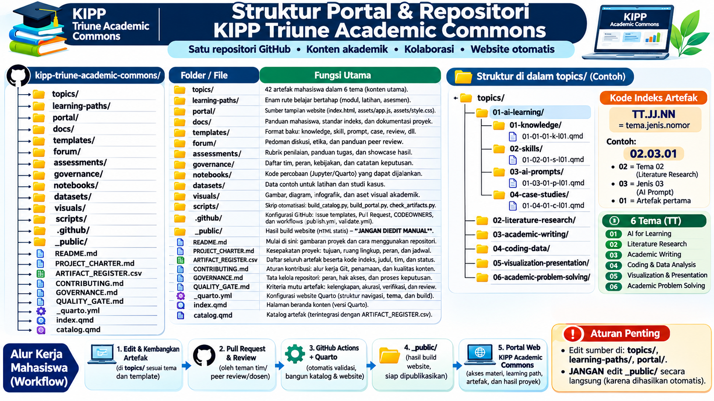
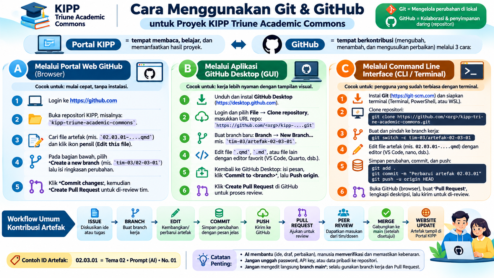

15 Repositori, Portal, dan Workflow Kolaboratif
15.1 Satu portal, satu repositori bersama
Portal proyek disimpan di repositori publik azral1962/kipp-triune-academic-commons, dengan branch utama main. Repositori ini menjadi sumber bersama untuk beranda portal, enam tema, katalog 42 artefak, enam learning path, panduan proyek, dan otomatisasi penerbitan. Mahasiswa mengerjakan sumber yang tersedia melalui Issue dan Pull Request; forum akademik menggunakan GitHub Discussions.
Uraian implementasi pada bab ini mengacu pada pemeriksaan 23 November 2026, terhadap commit c591a6a. Saat diperiksa, seluruh 42 artefak masih berstatus draft dan memiliki penanda [ISI]; enam learning path juga masih berupa kerangka. Karena itu, jumlah berkas menunjukkan kesiapan wadah kerja, belum membuktikan penyelesaian materi akademik. Lingkup pilot, aturan kontribusi, dan keadaan awal dijelaskan dalam README portal.

15.2 Penomoran artefak
Repositori menggunakan dua penanda yang saling melengkapi: ID tetap, seperti P-R01, dan kode hierarkis TT.JJ.NN, seperti 02.03.01. TT menyatakan tema, JJ menyatakan jenis (01 Knowledge, 02 Skills, 03 AI Prompts, 04 Case Studies), dan NN menyatakan urutan. ID tetap dipakai untuk melacak tugas, diskusi, dan kontribusi; kode hierarkis menjelaskan susunan artefak. Keduanya tetap disimpan pada metadata dan registri.
Contoh nyata adalah Critical Paper Reader, milik Tim 03: ID P-R01, kode 02.03.01, dan path topics/02-literature-research/03-ai-prompts/02-03-01-p-r01.qmd. ID tersebut tidak diganti menjadi kode numerik. Standar serta aturan pemindahan berkas tersedia pada standar indeks repositori.
15.3 Struktur folder repositori portal
kipp-triune-academic-commons/
README.md
CONTRIBUTING.md
PROJECT_CHARTER.md
GOVERNANCE.md
QUALITY_GATE.md
LICENSE-DECISION.md
_quarto.yml
index.qmd
catalog.qmd
ARTIFACT_REGISTER.csv
portal/
index.html
assets/
app.js
style.css
topics/
01-ai-learning/
01-knowledge/
02-skills/
03-ai-prompts/
04-case-studies/
02-literature-research/
03-academic-writing/
04-coding-data/
05-visualization-presentation/
06-academic-problem-solving/
learning-paths/
forum/
docs/ # panduan proyek dan Git/GitHub
templates/
assessments/
governance/
datasets/
notebooks/
visuals/
scripts/
check_artifacts.py
check_portal.py
build_catalog.py
build_portal.py
.github/
CODEOWNERS
ISSUE_TEMPLATE/
pull_request_template.md
workflows/
validate.yml
publish.yml
_site/ # dihasilkan oleh Quarto
_public/ # paket akhir hasil build portalFolder tema dan jenis sudah memakai penomoran pada struktur di atas. _site/ dan _public/ merupakan keluaran build, bukan tempat mahasiswa mengisi materi. Folder agents/ belum ada pada versi yang diperiksa; gagasan enam agen pada rancangan proyek tidak boleh dibaca sebagai enam implementasi perangkat lunak yang sudah tersedia.
Setiap tema memiliki tujuh artefak: dua Knowledge, dua Skills, dua Prompts, dan satu Case Study. Pasangan Tim 01–02 sampai Tim 11–12 mengembangkan enam tema secara berurutan. Pembagian ID, prioritas, dan penanggung jawab dibaca dari ARTIFACT_REGISTER.csv; daftar asli dalam buku tetap menjadi jejak historis, sedangkan pekerjaan portal mengikuti registri portal terkini.
15.4 Kolaborasi GitHub: dari tugas sampai artefak terverifikasi

Issue → Branch → Edit dan Uji → Commit → Push → Pull Request → Peer Review lintas tim → Revisi → Merge → Publish. Issue menyatakan tujuan dan kriteria penerimaan; PR membuktikan perubahan serta pengujian; reviewer memeriksa isi, referensi, dan keterpakaian. Dalam konvensi metadata repositori, hasil yang sudah melewati review serta uji dicatat sebagai reviewed. Istilah terverifikasi pada pembahasan mutu menjelaskan proses pemeriksaan, bukan nilai metadata baru bernama verified.
Dalam Academic Commons, alur tersebut menghubungkan pekerjaan 12 kelompok dengan mutu 42 artefak. Satu perubahan sebaiknya cukup kecil untuk diperiksa secara utuh. Langkah di bawah menerapkan panduan kontribusi portal dengan contoh P-R01. Nomor Issue pada contoh tetap ilustratif. Panduan mahasiswa yang lebih rinci tersedia di docs/student-workflow.md, sedangkan pola branch mengikuti GitHub flow.
15.4.1 Memahami Git, GitHub, dan istilah dasarnya
Git mencatat versi berkas dan riwayat perubahan pada komputer. GitHub menyediakan tempat menyimpan repositori secara daring, membahas pekerjaan, meninjau perubahan, dan menerbitkan portal. Menyimpan berkas di komputer belum berarti perubahan tersebut sudah tersedia bagi anggota lain.
| Istilah | Arti praktis dalam proyek |
|---|---|
| Repository atau repositori | Wadah sumber portal, artefak, registri, dan riwayat perubahan |
| Clone | Membuat salinan lokal repositori beserta riwayat Git |
| Branch | Jalur kerja untuk mengembangkan perubahan sebelum digabung |
| Commit | Rekaman perubahan terpilih dengan pesan dan identitas penulis |
| Push | Mengirim commit lokal ke repositori daring |
| Pull | Mengambil dan mengintegrasikan perubahan dari repositori daring |
| Issue | Catatan masalah atau tugas, beserta pembahasan dan kriteria penerimaannya |
| Pull Request atau PR | Usulan menggabungkan perubahan antarbranch untuk ditinjau |
| Merge | Menggabungkan perubahan suatu branch ke branch tujuan |
| Fork | Salinan repositori di akun lain untuk kontribusi tanpa akses tulis ke repositori asal |
Branch utama portal bernama main. Mengunggah berkas, menggabungkan PR, dan menerbitkan portal adalah tiga kejadian berbeda; keberhasilan salah satunya tidak membuktikan dua lainnya berhasil. Discussions digunakan untuk pertanyaan atau pembahasan akademik, Issues untuk pekerjaan konkret, dan PR untuk perubahan berkas yang akan diintegrasikan.
15.4.2 Persiapan akun, repositori, dan pembagian peran
Gunakan repositori azral1962/kipp-triune-academic-commons yang sudah tersedia. Koordinator mengatur akses anggota, mengisi governance/team-roster.csv, dan mencatat keputusan dalam governance/decision-log.md. PROJECT_CHARTER.md masih ditandai draf dan LICENSE-DECISION.md menyatakan lisensi belum dipilih pada versi yang diperiksa. Pengampu dan perwakilan mahasiswa perlu mengesahkan kesepakatan proyek serta hak publikasi karya.
Setiap anggota perlu dapat masuk ke GitHub, menerima undangan akses, menemukan repositori, dan membuka Issue. Aktifkan autentikasi dua faktor serta simpan kode pemulihan dengan aman. Jalur lokal memerlukan Git, editor, Python 3.10 atau lebih baru, serta Quarto untuk preview lengkap; workflow CI memakai Python 3.12. GitHub Desktop dapat menjadi pilihan antarmuka grafis. Akses Git melalui HTTPS menggunakan mekanisme kredensial seperti token atau pengelola kredensial; kata sandi akun bukan pengganti token untuk operasi Git. Alternatifnya adalah SSH. Ikuti dokumentasi autentikasi GitHub sesuai metode yang dipilih.
| Peran kerja | Tanggung jawab utama |
|---|---|
| Koordinator repositori | Mengatur akses, aturan branch, dan penyelesaian hambatan integrasi |
| Kontributor | Mengembangkan sumber, menguji perubahan, dan menanggapi review |
| Reviewer lintas kelompok | Memeriksa ketepatan isi dan mencoba artefak dari sudut pengguna |
| Integrator/pengelola rilis | Memastikan perubahan yang diterima dapat dibangun dan diterbitkan bersama |
Peran kerja ini tidak otomatis sama dengan nama tingkat izin GitHub. Berikan hak akses sesuai kebutuhan; seluruh anggota tidak perlu menjadi administrator. Kontributor sebaiknya tidak menjadi satu-satunya penilai perubahan sendiri. Sepakati minimal satu reviewer dari luar penyusun artefak sebelum merge.
README.md, CONTRIBUTING.md, GOVERNANCE.md, dan QUALITY_GATE.md sudah tersedia sebagai panduan kerja. Aturan kontribusi menggunakan pola branch tim-XX/ID-deskripsi dan meminta satu reviewer dari tim lain. .github/CODEOWNERS masih berisi contoh akun yang dikomentari; keberadaannya belum berarti reviewer otomatis telah ditetapkan. Pengelola perlu memeriksa akun pemilik, izin, serta kewajiban review pada pengaturan branch. Mekanisme pembatasannya dijelaskan dalam aturan protected branches.
15.4.3 Merumuskan pekerjaan melalui Issue
Di repositori, buka Issues → New issue. Cari dahulu apakah masalah yang sama sudah dilaporkan. Pilih formulir Tugas artefak, yang disediakan dalam .github/ISSUE_TEMPLATE/artifact-task.yml. Formulir meminta ID artefak, tim, sasaran pengguna dan ukuran sukses, serta pekerjaan dan bukti uji. Untuk laporan masalah mutu, tersedia formulir quality-report.yml. Contoh pengisian tugas berikut memakai artefak yang benar-benar tersedia; isi pekerjaan merupakan rancangan latihan.
Judul: [P-R01 | 02.03.01] Isi dan uji Critical Paper Reader
Masalah pengguna:
Mahasiswa memerlukan bantuan membaca paper tanpa menerima sumber karangan AI.
Lingkup perubahan:
Isi prompt, contoh aktual, pengujian, batasan, dan catatan review.
Lokasi:
topics/02-literature-research/03-ai-prompts/02-03-01-p-r01.qmd
Kriteria penerimaan:
- [ ] Tujuan, pengguna, dan bahan masukan prompt dinyatakan.
- [ ] Dua contoh normal dan satu contoh bermasalah dicoba.
- [ ] Klaim keluaran diperiksa terhadap paper sumber.
- [ ] Reviewer lintas tim dan pengguna uji memberi umpan balik.
- [ ] Halaman dapat dirender dan tautan terkait berfungsi.
Tim penanggung jawab: Tim 03; tetapkan satu anggota koordinator tugas
Reviewer: anggota dari kelompok lain
Bukti yang diminta: input-output aktual, sumber, catatan uji, dan hasil renderFormulir tugas mencantumkan label artifact; pengelola memastikan label tersebut tersedia. Label tambahan, milestone minggu 1–3, dan papan Projects dapat disepakati untuk koordinasi. Jika dipakai, kolom seperti Direncanakan → Dikerjakan → Direview → Perlu revisi → Diterima merupakan alat perencanaan tim. Kolom itu tidak otomatis mengubah nilai status pada YAML dan CSV.
15.4.4 Jalur pemula: menyunting melalui browser
Untuk koreksi teks singkat, anggota yang memiliki akses tulis dapat bekerja tanpa memasang Git lokal:
- Buka repositori dan pastikan branch awal adalah
mainyang terbaru. - Buat branch dengan nama yang menjelaskan tugas, misalnya
tim-03/P-R01-critical-reader. - Pada branch tersebut, buka
topics/02-literature-research/03-ai-prompts/02-03-01-p-r01.qmddan pilih penyuntingan. Isi bagian[ISI], pertahankan metadata, lalu periksa diff, yaitu perbandingan sebelum dan sesudah perubahan. - Simpan sebagai commit pada branch kerja dengan pesan yang spesifik, misalnya
docs(P-R01): isi dan uji Critical Paper Reader. - Buka PR menuju
main, hubungkan Issue, dan minta review. Jika belum siap, gunakan draft PR. - Jika reviewer meminta revisi, sunting dan commit kembali pada branch yang sama agar PR memuat revisi tersebut.
Jika tidak memiliki akses tulis, gunakan fork sesuai kebijakan pengelola, lalu ajukan PR dari branch pada fork ke repositori asal. Pemilihan branch sumber dan tujuan dijelaskan dalam panduan membuat Pull Request.
Pratinjau Markdown di GitHub belum membuktikan bahwa sitasi, penomoran gambar, dan navigasi Quarto bekerja. Untuk perubahan melalui browser, minta anggota yang mempunyai lingkungan lokal atau pipeline otomatis melakukan render sebelum PR diterima.
15.4.5 Jalur GitHub Desktop
Panduan portal juga menyediakan jalur tanpa perintah terminal. Di GitHub Desktop, pilih File → Clone repository untuk repositori proyek, perbarui main melalui Fetch origin/Pull origin, lalu buat branch lewat Current Branch → New Branch. Sunting .qmd pada editor, periksa perubahan di Desktop, tulis pesan commit, kemudian pilih Publish branch atau Push origin. Lanjutkan melalui Preview Pull Request/Create Pull Request. Revisi tetap dikirim dari branch PR yang sama; render dan pemeriksaan Python dilakukan oleh anggota yang menyiapkan lingkungan lokal.
15.4.6 Jalur lokal: clone, branch, commit, dan push
Jalur lokal cocok untuk perubahan banyak berkas, gambar, atau contoh yang perlu dijalankan. Contoh berikut menggunakan terminal PowerShell dan akses tulis ke repositori portal. Jalankan di salinan repo portal, yang terpisah dari repo sumber buku ini.
Tetapkan identitas commit sekali pada komputer yang digunakan. Alamat surel dapat memakai alamat privat noreply yang disediakan dalam pengaturan akun GitHub.
git config --global user.name "Nama Mahasiswa"
git config --global user.email "ALAMAT-EMAIL-COMMIT"
git clone https://github.com/azral1962/kipp-triune-academic-commons.git
cd kipp-triune-academic-commons
git statusclone cukup dilakukan sekali untuk satu salinan lokal. Pada pekerjaan berikutnya, masuk ke folder repositori yang sudah ada. Sebelum memulai tugas baru, pastikan git status menunjukkan tidak ada perubahan lokal yang belum diselesaikan, kemudian perbarui main dan buat branch:
git switch main
git pull --ff-only origin main
git switch -c tim-03/P-R01-critical-readerSunting sumber P-R01 yang ditunjuk registri. Pertahankan id, index_code, type, theme, owner, dan priority; jelaskan bantuan AI pada ai_usage. Saat artefak belum disetujui, pertahankan status: draft. Setelah menyimpan, jalankan pemeriksaan yang tersedia:
git status
git diff
python scripts/check_artifacts.py
python scripts/check_portal.py
python scripts/build_catalog.py
git diff -- catalog.qmd
quarto renderPeriksa halaman hasil di _site/; untuk menguji beranda bersama seluruh materi, ikuti langkah perakitan _public/ pada bagian penerbitan. Periksa sumber, contoh keluaran AI, tautan, dan navigasi. Perintah render tidak otomatis menguji kebenaran isi atau kegunaan prompt. Jika satu perintah gagal, perbaiki kegagalannya sebelum menganggap rangkaian pemeriksaan selesai.
Pilih hanya berkas yang terkait tugas. Untuk contoh P-R01, gunakan path yang benar-benar ada pada repo portal:
git add topics/02-literature-research/03-ai-prompts/02-03-01-p-r01.qmd
git diff --staged
git commit -m "docs(P-R01): isi dan uji Critical Paper Reader"
git push -u origin tim-03/P-R01-critical-readergit add memilih perubahan yang akan direkam; git diff --staged memeriksa pilihan itu sebelum commit. Jika status atau data registri berubah dengan persetujuan koordinator, sertakan pula ARTIFACT_REGISTER.csv dan hasil pembaruan catalog.qmd. _site/ serta _public/ dihasilkan ulang untuk penerbitan. push mengirim branch kerja; perubahan belum masuk main sampai PR digabung.
15.4.8 Melakukan peer review, revisi, dan merge
Reviewer membaca tujuan Issue, memeriksa Files changed, lalu mencoba hasil perubahan. Untuk artefak akademik, gunakan checklist berikut sebagai bukti penerimaan:
- Ketepatan: konsep, angka, contoh, dan kesimpulan konsisten.
- Sumber: rujukan dapat ditelusuri dan mendukung klaim yang dibuat.
- Keterpakaian: langkah dapat diikuti pembaca yang tidak ikut menyusunnya.
- Integrasi: ID, registri, prasyarat, dan tautan antarartefak sesuai.
- Tampilan: rumus, tabel, gambar, dan navigasi terbaca pada halaman hasil.
- Integritas: hak penggunaan materi jelas dan bantuan AI diungkap sesuai ketentuan kelas.
Komentar review menyebut lokasi, masalah, dan hasil yang diharapkan, misalnya: “Pada contoh keluaran P-R01, simpulan ini belum dirujuk ke bagian paper. Tunjukkan bagian sumber atau tandai klaim sebagai belum terverifikasi.” Pisahkan koreksi yang harus diselesaikan dari saran pengayaan. Gunakan templates/peer-review.md dan templates/user-test.md untuk menyimpan bukti. Kontributor memperbaiki branch yang sama; reviewer memeriksa revisi sebelum menyatakan persetujuan.
Koordinator melakukan merge setelah kriteria penerimaan, review lintas tim, uji pengguna, dan pemeriksaan yang diwajibkan terpenuhi. Perubahan status mengikuti prosedur YAML–CSV–katalog pada bagian registri. Sesudah merge, perbarui salinan lokal dengan git switch main lalu git pull --ff-only origin main. Catat tautan PR pada bagian peer review artefak dan laporan kontribusi; registri saat ini tidak mempunyai kolom khusus URL PR.
15.4.9 Menyinkronkan pekerjaan dan menyelesaikan konflik
Konflik dapat terjadi ketika dua branch mengubah bagian berkas yang sama. Kurangi risikonya dengan pembagian lingkup, PR berukuran kecil, dan pembaruan dari main. Sebelum sinkronisasi, selesaikan atau simpan perubahan lokal dan periksa git status. Pada branch kerja, integrasikan versi terbaru:
git switch tim-03/P-R01-critical-reader
git fetch origin
git merge origin/mainJika Git melaporkan konflik, buka berkas yang disebut oleh git status. Kenali tiga penanda berikut:
| Penanda dalam berkas | Makna pada contoh merge ini |
|---|---|
<<<<<<< HEAD |
Awal bagian isi dari branch kerja |
======= |
Pemisah antara isi branch kerja dan isi dari main |
>>>>>>> origin/main |
Akhir bagian isi dari main yang sedang digabungkan |
Diskusikan makna perubahan dengan penyusunnya, susun isi akhir yang benar, lalu hapus seluruh penanda konflik. Jangan sekadar memilih satu sisi jika kedua sisi memuat informasi penting. Setelah itu, pilih berkas yang telah diselesaikan dengan git add NAMA-BERKAS, jalankan render dan pemeriksaan isi, selesaikan merge dengan git commit, lalu git push. Jika perlu membatalkan proses merge yang sedang berkonflik untuk meninjau ulang, gunakan git merge --abort. Langkah teknisnya tersedia dalam panduan penyelesaian konflik GitHub.
Jika push ditolak karena branch daring telah berubah, ambil dan periksa perubahan rekan sebelum mengintegrasikannya. Hindari push --force pada branch bersama. Untuk keluaran HTML yang berkonflik, selesaikan sumber lebih dahulu lalu render ulang agar hasil mengikuti sumber yang telah disepakati.
15.4.10 Menjaga berkas, data, dan bukti kontribusi
Simpan sumber, gambar yang diperlukan, bibliografi, dan data yang boleh dibagikan. Gunakan .gitignore untuk berkas sementara, lingkungan lokal, atau kredensial seperti .env. Berkas yang sudah dilacak Git tetap terlacak meskipun kemudian dimasukkan ke .gitignore; periksa riwayat dan daftar perubahan sebelum mengunggah.
Jangan menaruh token, kata sandi, data pribadi mahasiswa, atau dokumen berlisensi terbatas di repositori publik. Jika token terlanjur terbuka, segera cabut atau rotasi token tersebut; menghapusnya dari versi terbaru saja tidak menghapus riwayat. Untuk materi pihak ketiga, catat sumber dan izin penggunaan. Lisensi repositori tidak otomatis memberikan hak atas seluruh materi yang dikutip.
Kontribusi individu ditunjukkan melalui Issue, commit yang bermakna, review, hasil uji, dan refleksi keputusan. Banyaknya commit bukan ukuran tunggal kualitas. Jika anggota mengerjakan analisis atau uji pengguna secara bersama, catat nama, tugas, serta buktinya dalam PR atau laporan agar pekerjaan yang tidak berupa penulisan berkas tetap terlihat.
15.4.11 Latihan satu siklus dan diagnosis masalah umum
Sebagai latihan awal, setiap anggota memilih satu koreksi kecil, membuka Issue, membuat branch, mengajukan PR, dan memberi review pada PR anggota lain. Latihan selesai setelah koreksi diterima dan tampak pada portal yang diterbitkan. Bukti minimum berupa tautan Issue, PR, catatan review/uji, serta alamat halaman hasil.
| Gejala | Pemeriksaan dan tindak lanjut |
|---|---|
| Repositori tidak dapat diakses | Periksa akun yang aktif, URL, undangan, dan izin akses |
| Perubahan tidak terlihat di GitHub | Periksa apakah berkas sudah disimpan, di-commit, dan di-push ke branch yang benar |
| PR tidak menampilkan perubahan | Periksa base/compare dan apakah commit sudah ada di branch sumber |
| Pemeriksaan otomatis gagal | Baca log pada tab Actions, perbaiki penyebab, lalu commit revisi |
| PR sudah merge tetapi portal masih lama | Periksa hasil render, sumber penerbitan Pages, dan status deployment |
| Halaman lokal baik tetapi tautan publik rusak | Periksa huruf besar/kecil nama berkas, path relatif, dan keberadaan aset pada hasil terbitan |
Panduan ini berfokus pada pola kerja yang dapat dipraktikkan. Nama menu, ketersediaan fitur, dan kebijakan akses dapat berubah; periksa dokumentasi resmi yang ditautkan ketika menyiapkan repositori kelas.
15.5 Panduan pengguna portal

Beranda bersumber dari portal/index.html. Katalog interaktif pada beranda membaca data registri yang dibentuk saat build, dengan pencarian dan filter tema, prioritas, serta jenis artefak. Tautan katalog membuka materi Quarto pada /learn/topics/.../*.html. Enam learning path tersedia melalui /learn/learning-paths/index.html, dan panduan Git/GitHub melalui /learn/docs/student-workflow.html. Path tersebut berada di bawah akar situs proyek; alamat situs final mengikuti URL yang ditampilkan GitHub Pages.
Pengguna sebaiknya mulai dari pertanyaan atau kasus, lalu memilih tema dan learning path. Knowledge memberi landasan, Skills memandu praktik, Prompts membantu eksplorasi, dan Cases mengintegrasikan penerapan. Halaman forum memberikan petunjuk; diskusi aktual dilakukan di GitHub Discussions. Berkas di /repository/ adalah salinan dokumen sumber untuk diunduh, dibentuk saat build dari repositori yang sama.
Karena materi masih draf pada versi yang diperiksa, pembaca perlu memperhatikan bagian yang belum terisi sebelum memakai isinya. portal/assets/app.js saat ini menampilkan keterangan katalog “seluruhnya berstatus draf” secara tetap. Ketika status artefak mulai berubah, pengelola perlu menyesuaikan keterangan tersebut dengan data registri agar tampilan tidak tertinggal dari sumber.
15.6 Membangun dan menerbitkan portal yang sebenarnya
Portal memakai proyek Quarto website dengan output-dir: _site. Beranda akhir bersumber dari HTML pada portal/; halaman materi dirender dengan Quarto. Arsitektur integrasi portal menghubungkan kedua bagian tersebut melalui perakitan berikut:
| Tahap | Sumber atau perintah | Hasil |
|---|---|---|
| Membentuk katalog Quarto | python scripts/build_catalog.py |
catalog.qmd dari registri CSV |
| Merender materi belajar | quarto render |
Halaman HTML di _site/ |
| Merakit portal terpadu | python scripts/build_portal.py |
Paket situs di _public/ |
| Menyediakan beranda dan aset | portal/ serta registri CSV |
_public/index.html, CSS/JS, assets/artifacts.json, dan assets/artifacts-data.js |
| Menyertakan materi dan dokumen | _site/ serta dokumen sumber terpilih |
_public/learn/ dan _public/repository/ |
| Menerbitkan | Workflow publish.yml |
Artefak _public/ dikirim ke GitHub Pages |
15.6.1 Preview lengkap pada komputer
Sesudah clone dan memasang prasyarat, jalankan perintah berikut dari akar repo portal. Hentikan rangkaian dan perbaiki masalah jika salah satu pemeriksaan gagal.
python scripts/check_artifacts.py
python scripts/check_portal.py
python scripts/build_catalog.py
quarto render
python scripts/build_portal.py
python -m http.server 8000 --directory _publicBuka http://localhost:8000/, lalu coba katalog, satu artefak, satu learning path, dan satu unduhan dokumen. Hentikan server dengan Ctrl+C. build_portal.py membentuk ulang folder _public/; simpan perubahan pada sumber agar tidak hilang saat build berikutnya. Folder _site/ dan _public/ tidak perlu di-commit sebagai sumber kontribusi.
Jika Quarto belum tersedia, python scripts/build_portal.py --allow-missing-quarto dapat dipakai untuk preview terbatas beranda. Tanpa hasil render Quarto yang valid, materi belajar belum tersedia lengkap. Mode tersebut bukan bukti bahwa paket siap dipublikasikan.
15.6.2 Pemeriksaan PR yang sudah tersedia
Workflow .github/workflows/validate.yml, bernama Validate source artifacts, berjalan pada push dan pull_request. Workflow menggunakan Python 3.12 untuk:
- Menjalankan
scripts/check_artifacts.pyterhadap struktur dan metadata artefak. - Menjalankan
scripts/build_catalog.py, lalugit diff --exit-code -- catalog.qmduntuk memastikan katalog yang di-commit sesuai registri. - Menjalankan
scripts/check_portal.pyuntuk memeriksa pengikatan data katalog dan path sumber portal.
Workflow PR tersebut belum menjalankan quarto render. Karena itu, status pemeriksaan berhasil belum membuktikan seluruh halaman dapat dirender atau tampil dengan benar. Penulis atau koordinator perlu memberikan bukti render lokal sebelum merge. Penambahan render ke pemeriksaan PR dapat menjadi pengembangan berikutnya; fitur itu belum menjadi perilaku workflow saat bab ini diperbarui.
15.6.3 Publikasi setelah merge ke main
Workflow .github/workflows/publish.yml, bernama Publish unified KIPP portal, berjalan pada push ke main dan dapat dijalankan manual melalui workflow_dispatch. Job build menyiapkan Python dan Quarto, memvalidasi artefak, membentuk katalog, menjalankan quarto render, lalu merakit _public/. Setelah konfigurasi Pages berhasil, folder _public/ diunggah sebagai artefak. Job deploy menerbitkannya melalui lingkungan github-pages.
Koordinator perlu mengatur Settings → Pages → Build and deployment → Source → GitHub Actions sesuai rancangan ini. Pilihan branch dengan folder /docs tidak mengikuti alur build portal yang tersedia. Pengaturan sumber Pages dijelaskan dalam dokumentasi GitHub Pages; integrasi Quarto tersedia pada panduan Quarto untuk GitHub Pages.
Sesudah merge, periksa workflow bernama Publish unified KIPP portal, keberhasilan job deploy, URL keluaran, dan isi halaman publik. Periksa beranda serta satu halaman /learn/; keberhasilan beranda saja belum membuktikan materi Quarto ikut terbit.
15.6.4 Catatan keadaan publikasi saat pemeriksaan
Riwayat Actions yang tersedia pada 23 November 2026 memuat tiga proses dari commit yang diperiksa:
| Proses pada 17 November 2026 | Hasil tercatat | Makna pemeriksaan |
|---|---|---|
| Validate source artifacts | Berhasil | Pemeriksaan struktur, katalog, dan pengikatan portal lulus |
| Publish unified KIPP portal | Gagal | Validasi, render, dan perakitan berhasil; actions/configure-pages gagal dengan pesan Not Found, sehingga deploy terpadu tidak dijalankan |
| pages build and deployment | Berhasil | Proses Pages lain berhasil sesudahnya; hasil ini tidak membuktikan workflow publikasi terpadu sudah berhasil dijalankan ulang |
Pesan kegagalan meminta pemeriksaan apakah Pages sudah aktif dan menggunakan GitHub Actions. Tindak lanjut koordinator adalah memeriksa pengaturan Pages, menjalankan ulang workflow publikasi terpadu setelah konfigurasi sesuai, lalu memeriksa hasil publik. Catatan ini merekam keadaan saat pemeriksaan, bukan menyatakan bahwa situs pasti masih gagal atau konfigurasi sekarang sudah benar.
15.6.5 Membedakan portal proyek dan buku ini
| Aspek | Repo portal proyek | Repo buku gabungan ini |
|---|---|---|
| Jenis Quarto | website |
book |
| Hasil render | _site/ |
docs/ |
| Paket situs akhir | _public/, dirakit oleh skrip |
Hasil buku berada di docs/ |
Fungsi folder docs/ |
Panduan dan dokumentasi sumber portal | Hasil render HTML buku |
| Sumber perubahan kontribusi | Artefak di topics/ dan sumber portal terkait |
Bab dan lampiran .qmd buku |
Contoh Git pada bab ini ditujukan ke repo portal. Perubahan naskah buku tetap dilakukan pada repo buku, kemudian dirender dengan konfigurasi buku. Pemisahan konteks ini mencegah mahasiswa mencari 15-implementasi-teknis.qmd di repo portal atau menganggap docs/ portal sebagai hasil render.
15.7 Registri, metadata, dan perubahan status
ARTIFACT_REGISTER.csv merupakan sumber utama katalog. Kolomnya adalah id, theme_slug, theme_title, type, title, owner, priority, status, file, index_code, theme_code, dan artifact_type_code. Nilai prioritas awal adalah P0 untuk Knowledge, P1 untuk Skills dan Prompts, serta P2 untuk Cases. Prioritas membantu mengatur urutan kerja; prioritas tidak menyatakan bahwa materi telah selesai.
Setiap artefak memiliki metadata yang harus konsisten dengan registri. Contoh awal nyata pada P-R01:
---
title: "Critical Paper Reader"
id: "P-R01"
index_code: "02.03.01"
type: "prompts"
theme: "research"
owner: "Tim 03"
priority: P1
status: draft
ai_usage: "Belum diisi; wajib dijelaskan sebelum review"
---Panduan perubahan status menetapkan konvensi berikut. Makna kerja di tabel menjelaskan penerapannya bersama aturan kontribusi dan quality gate.
| Nilai metadata | Penggunaan dalam proses |
|---|---|
draft |
Isi awal atau pekerjaan yang belum memenuhi kriteria penerimaan |
in-review |
Sedang diajukan untuk peninjauan |
needs-revision |
Memerlukan perbaikan berdasarkan temuan review atau uji |
reviewed |
Bukti review lintas tim, uji pengguna, dan tindak lanjut telah dicatat serta disetujui |
Sesudah penerimaan disetujui, ubah status pada YAML artefak dan baris CSV dengan ID yang sama, melalui koordinasi pengelola registri. Jalankan python scripts/check_artifacts.py dan python scripts/build_catalog.py, periksa diff, lalu sertakan artefak, CSV, dan catalog.qmd yang berubah dalam PR. Jika kontributor belum berwenang mengubah registri, minta koordinator menyiapkan perubahan tersebut pada proses review. Jangan menambahkan kolom baru atau mengganti ID untuk memperbarui status.
Nilai reviewed menyatakan penerimaan prosedur internal pilot, bukan sertifikasi kebenaran ilmiah. Bukti uji dan komentar reviewer disimpan pada bagian artefak serta PR, bukan digantikan oleh status saja. README memakai istilah umum “Verified”; untuk nilai yang ditulis ke YAML dan CSV, ikuti docs/change-status.md dan CONTRIBUTING.md agar konsisten.
15.8 Memisahkan sumber dan hasil terbitan
Sumber .qmd, gambar, referensi, dan data yang boleh dibagikan merupakan input penerbitan. Pada repo portal, catalog.qmd dibentuk dari CSV, halaman Quarto di _site/ dibentuk dari sumber, dan _public/ dirakit untuk publikasi. Perbaiki sumber lalu jalankan generator yang sesuai agar perubahan tidak hilang pada build berikutnya. Pada repo buku ini, hasil render berada di docs/; struktur proyek buku dijelaskan dalam dokumentasi Quarto (Quarto Project, t.t.).
Simpan informasi lingkungan yang cukup untuk menjalankan contoh: bahasa, dependensi, versi penting, dan cara memperoleh data. Contoh yang hanya ilustratif diberi penanda tidak dieksekusi; contoh yang disebut telah diuji perlu benar-benar dijalankan pada input yang dicatat. Praktik ini membantu membedakan materi pengantar dari hasil komputasi yang dapat direproduksi (Wilson dkk. 2017).
15.9 Contoh alur review satu perubahan
Sebagai simulasi, Tim 03 mengisi artefak P-R01 — Critical Paper Reader. Issue menetapkan bahwa prompt harus membantu membaca paper tanpa mengarang sumber. Kontributor mengisi kerangka pada branch tim-03/P-R01-critical-reader, mencoba dua masukan normal dan satu masukan bermasalah, lalu menyimpan input-output aktual serta hasil pemeriksaan terhadap sumber paper. Artefak tetap berstatus draft selama bukti penerimaan belum lengkap.
Reviewer dari tim lain mencoba prompt dan menandai klaim yang tidak didukung paper. Kontributor merevisi instruksi, mengulang contoh yang gagal, dan memperbarui catatan uji. Sesudah kriteria QUALITY_GATE.md terpenuhi, perubahan status dikoordinasikan pada YAML dan CSV, katalog dibentuk ulang, dan bukti dicantumkan dalam PR. Koordinator memeriksa hasil CI, bukti render, dan persetujuan review sebelum merge.
Workflow publikasi kemudian membangun _site/, merakit _public/, dan mencoba deploy ke Pages. Pengelola memeriksa keluaran publik serta halaman artefak. Simulasi ini menunjukkan proses yang perlu dijalankan mahasiswa; contoh ini bukan klaim bahwa P-R01 sudah terisi atau telah lulus review pada commit yang diperiksa.
15.10 Pemeriksaan otomatis dan batasnya
Pemeriksaan yang sudah tersedia mempunyai lingkup tertentu. check_artifacts.py memeriksa jumlah 42 entri, keunikan ID, keberadaan berkas, kesesuaian metadata tertentu dengan CSV, bentuk kode hierarkis dan nama berkas, tautan dari indeks tema serta learning path, dan keberadaan judul bagian wajib. check_portal.py memeriksa berkas portal, penyertaan aset manifest, pola tautan menuju materi Quarto, dan keberadaan path artefak.
Kedua skrip tersebut bukan pemeriksaan menyeluruh semua tautan situs atau seluruh aturan metadata. Keduanya juga tidak membuktikan bahwa penanda [ISI] sudah dilengkapi, sitasi mendukung klaim, prompt menghasilkan jawaban benar, atau pengguna dapat mengikuti tutorial. Hal ini menjelaskan mengapa pemeriksaan struktur dapat lulus ketika semua artefak masih draf. Pemeriksaan substansi tetap menggunakan QUALITY_GATE.md, review lintas tim, dan uji pengguna.
Pisahkan tiga bukti: struktur valid, materi diterima, dan publikasi berhasil. Status CI PR hanya mendukung bukti yang benar-benar diuji; persetujuan manusia harus didukung catatan review; deployment harus dibuktikan dengan hasil workflow dan halaman publik. Untuk penilaian, catat commit atau versi yang dipakai bersama tautan PR dan hasil uji agar karya dapat ditelusuri pada keadaan yang sama.
15.11 Merawat portal setelah tenggat
Tentukan pemilik pemeliharaan, cara melaporkan kesalahan, dan masa tinjau sumber yang mudah berubah. Tutorial layanan daring lebih cepat kedaluwarsa daripada penjelasan dasar probabilitas. Penandaan tanggal pemeriksaan membantu pengguna menilai apakah langkah teknis masih sesuai. Jika suatu materi perlu diarsipkan, catat keputusan dan alasannya tanpa menghapus sejarah. Penambahan nilai status metadata untuk arsip memerlukan kesepakatan baru; konvensi saat ini tetap memakai empat nilai pada panduan perubahan status.
Sebagai latihan, pilih satu artefak dan lakukan audit dari registri sampai halaman hasil. Periksa identitas, lokasi, sumber, tampilan, serta bukti penerimaan. Lalu simulasikan pemindahan file dan jelaskan apa yang perlu diperbarui. Tujuannya agar struktur repositori mendukung pengguna dan reviewer, bukan hanya terlihat teratur bagi penyusunnya.